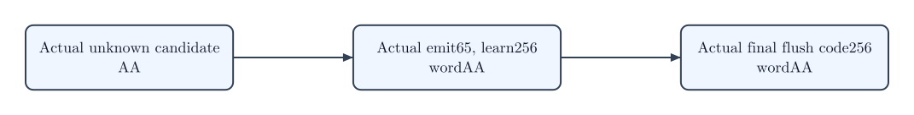
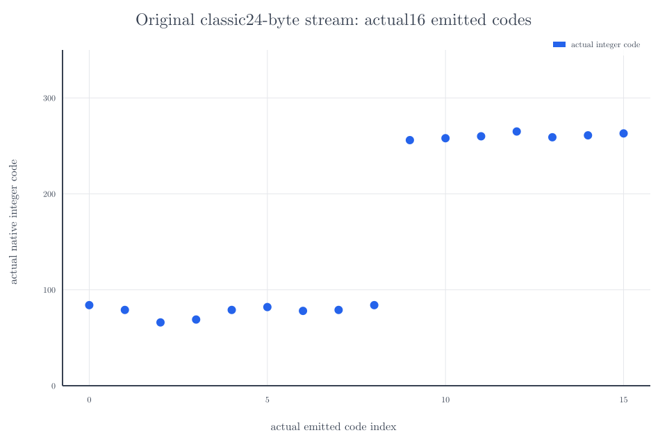
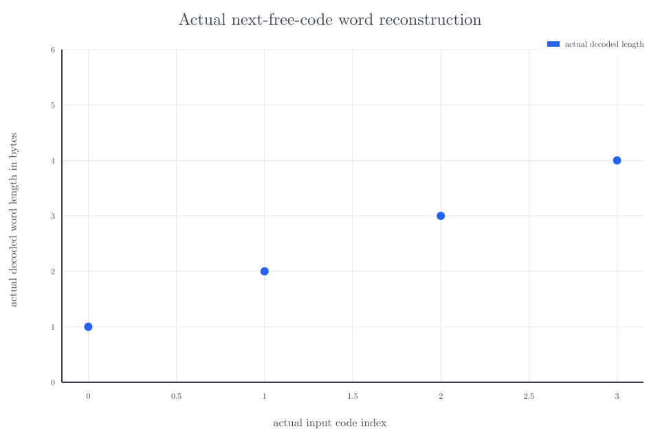
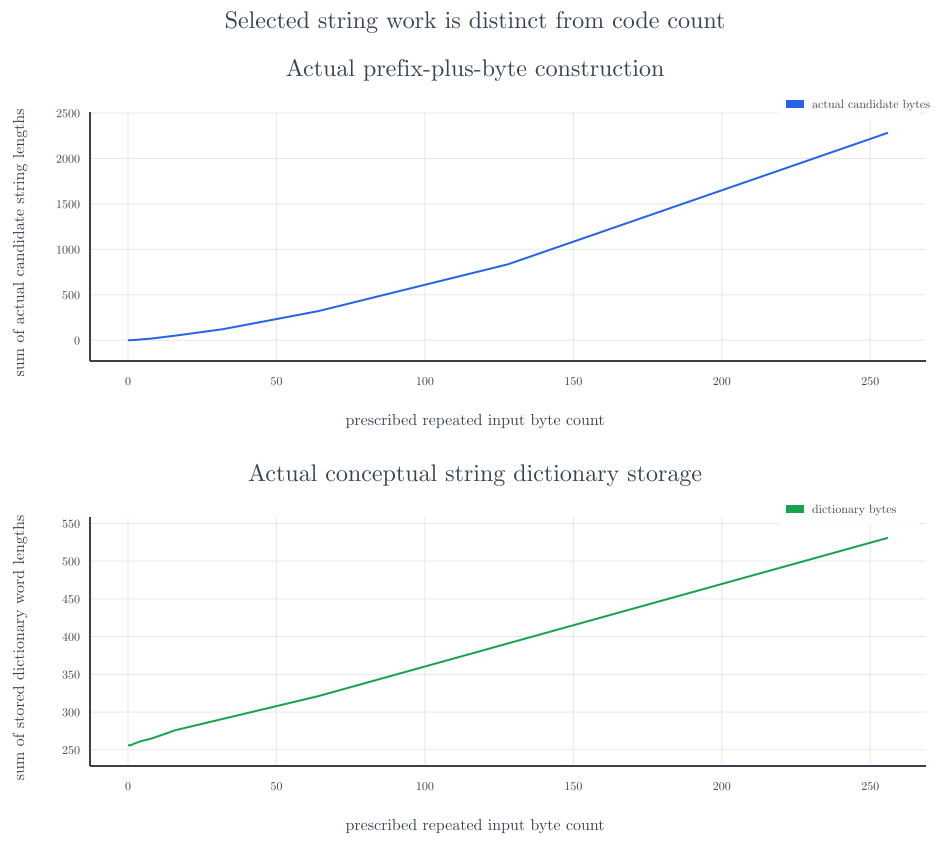

Lempel–Ziv–Welch integer-code compression
Abstract
LZW begins with256 one-byte dictionary words and learns longer phrases while emitting integer codes. The decoder reconstructs those phrases from the codes, including one special missing-code case. We retain the original classic and repeated-pangram fixtures, expose actual producing decisions, reject corrupt code streams, and distinguish integer-code counts from packed compressed bytes.
Tiny streaming example: AAA
The initial dictionary contains every one-byte word at its unsigned byte code. The encoder holds a pending word w. For each actual next byte c, look up w+c. If present, keep the longer pending word; otherwise emit w’s code, learn w+c at the next free integer code, and reset the pending word to c. At end, emit any remaining pending word.
For AAA, the first A is already known. The second byte makes unknown AA: emit65, learn AA as256, and keep A pending. The third byte extends that pending A to the now-known AA, which is finally flushed as256. The real output is[65,256]. The diagram and decision table use the actual producing trace; they do not rebuild a second dictionary for display.
#include <dm/dm.hpp>
int main() {
std::filesystem::create_directories("build");
auto t = dm::algorithms::lzw_encode_trace("AAA");
std::print("| actual input index | actual final flush | actual prior prefix | actual candidate | known " "| actual emitted code or minus1 | actual learned code or minus1 |\n| ---: | --- | --- | --- " "| --- | ---: | ---: |\n");
for (auto &s : t.steps)
std::print("| {} | {} | {} | {} | {} | {} | {} |\n", s.input_index,
s.flush, s.prefix, s.candidate, s.known, s.emitted_code,
s.learned_code);
auto &learn = t.steps[1];
auto &flush = t.steps.back();
dm::graphics::Diagram d;
d.node("lookup", {0, 0},
std::format("Actual unknown candidate\n{}", learn.candidate)).node(
"learn", {6, 0},
std::format("Actual emit{}, learn{}\nword{}", learn.emitted_code,
learn.learned_code, learn.candidate)).node(
"flush", {12, 0},
std::format("Actual final flush code{}\nword{}", flush.emitted_code,
flush.prefix)).edge("lookup", "learn").edge("learn", "flush");
d.save_svg("build/lzw_tiny.svg");
}| actual input index | actual final flush | actual prior prefix | actual candidate | known | actual emitted code or minus1 | actual learned code or minus1 |
|---|---|---|---|---|---|---|
| 0 | false | A | true | -1 | -1 | |
| 1 | false | A | AA | false | 65 | 256 |
| 2 | false | A | AA | true | -1 | -1 |
| 3 | true | AA | false | 256 | -1 |

Original classic and repeated-pangram streams
Retain TOBEORNOTTOBEORTOBEORNOT,24 bytes, with original16-code stream84,79,66,69,79,82,78,79,84,256,258,260,265,259,261,263. The native helper owns that exact classic input. Codes0..255 denote seeded single bytes; larger codes refer to phrases learned by the producing encoder. A separate shared native fixture retains the original89-byte repeated pangram and its65 emitted codes. Both are decoded and compared exactly with their input bytes.
The figure plots the actual emitted integer codes of the classic stream. Neither16 codes for24 bytes nor65 codes for89 bytes is a compressed-byte ratio. This API defines no bit packing, variable code-width schedule, dictionary reset, clear/end codes or file framing, and is not a ready-to-use GIF/TIFF/compress wire format. These exact synthetic fixtures need no external dataset.
#include <dm/dm.hpp>
int main() {
std::filesystem::create_directories("build");
auto classic = dm::algorithms::lzw_classic_text();
auto a = dm::algorithms::lzw_encode_analyze(classic);
auto text = dm::algorithms::lz77_demo_text();
auto other = dm::algorithms::lzw_encode_analyze(text);
std::print("Actual classic input {}; input bytes {}; integer codes {}; exact round trip {}. Original " "longer input bytes {}; actual codes {}; exact round trip {}.\n\n| actual emitted code index " "| actual integer code | refers to learned phrase |\n| ---: | ---: | --- |\n",
classic, classic.size(), a.codes.size(),
dm::algorithms::lzw_decode(a.codes) == classic, text.size(),
other.codes.size(),
dm::algorithms::lzw_decode(other.codes) == text);
std::vector<double> x, y;
for (std::size_t i = 0; i < a.codes.size(); ++i) {
std::print("| {} | {} | {} |\n", i, a.codes[i], a.codes[i] >= 256);
x.push_back(i);
y.push_back(a.codes[i]);
}
auto p = dm::graphics::RPlot::create();
p.points(x, y, "actual integer code", {37, 99, 235}, 6).y_limits(0, 350).title("Original classic24-byte stream: actual16 emitted codes").x_label("actual emitted code index").y_label("actual native integer code").save_svg("build/lzw_original.svg");
}Actual classic input TOBEORNOTTOBEORTOBEORNOT; input bytes 24; integer codes 16; exact round trip true. Original longer input bytes 89; actual codes 65; exact round trip true.
| actual emitted code index | actual integer code | refers to learned phrase |
|---|---|---|
| 0 | 84 | false |
| 1 | 79 | false |
| 2 | 66 | false |
| 3 | 69 | false |
| 4 | 79 | false |
| 5 | 82 | false |
| 6 | 78 | false |
| 7 | 79 | false |
| 8 | 84 | false |
| 9 | 256 | true |
| 10 | 258 | true |
| 11 | 260 | true |
| 12 | 265 | true |
| 13 | 259 | true |
| 14 | 261 | true |
| 15 | 263 | true |

Why a code equal to the next free code can be decoded
After decoding the current word, the decoder learns the previous word followed by the current word’s first byte. It is therefore one learned entry behind the encoder when the encoder emits a newly formed repeated word. If the supplied code is exactly the next free dictionary code, the only consistent word is previous+previous.first. This requires a nonempty previous word, guaranteed by a valid seeded first code and induction on valid entries.
The hand-checkable stream[65,256,257,258] reconstructs A, AA, AAA, AAAA, producing ten A bytes. Each of its final three codes is the actual next-code special case. The native trace stores every actual decoded word, learned entry and appended output span. A code beyond the next free code is corrupt, not another version of this exception.
#include <dm/dm.hpp>
int main() {
std::filesystem::create_directories("build");
auto t = dm::algorithms::lzw_decode_trace({65, 256, 257, 258});
std::print("| actual input code index | supplied code | actual special case | actual decoded word | " "actual learned code or minus1 | actual learned word | actual output begin | actual output " "end |\n| ---: | ---: | --- | --- | ---: | --- | ---: | ---: |\n");
std::vector<double> x, y;
for (auto &s : t.steps) {
std::print("| {} | {} | {} | {} | {} | {} | {} | {} |\n", s.input_index,
s.code, s.special, s.entry, s.learned_code, s.learned_entry,
s.output_begin, s.output_end);
x.push_back(s.input_index);
y.push_back(s.entry.size());
}
std::print("\nActual decoded text {}; actual bytes {}; actual special cases {}; actual conceptual " "dictionary bytes {}.\n",
t.analysis.data, t.analysis.work.emitted_bytes,
t.analysis.work.special_cases, t.analysis.work.dictionary_bytes);
auto p = dm::graphics::RPlot::create();
p.points(x, y, "actual decoded length", {37, 99, 235}, 6).y_limits(0, 6).title("Actual next-free-code word reconstruction").x_label("actual input code index").y_label("actual decoded word length in bytes").save_svg("build/lzw_special.svg");
}| actual input code index | supplied code | actual special case | actual decoded word | actual learned code or minus1 | actual learned word | actual output begin | actual output end |
|---|---|---|---|---|---|---|---|
| 0 | 65 | false | A | -1 | 0 | 1 | |
| 1 | 256 | true | AA | 256 | AA | 1 | 3 |
| 2 | 257 | true | AAA | 257 | AAA | 3 | 6 |
| 3 | 258 | true | AAAA | 258 | AAAA | 6 | 10 |
Actual decoded text AAAAAAAAAA; actual bytes 10; actual special cases 3; actual conceptual dictionary bytes 265.

Complete code guards and string-work limits
Complete numeric structure can be validated before dictionary construction: the first code must be a seeded byte0..255, and code index k>=1 can be no greater than255+k because one entry has been learned after each preceding noninitial code. Negative or unavailable future codes throw, even after a valid prefix. This replaces the old decoder’s silent corrupt-prefix return and prevents an invalid first code from creating an empty word that could later be indexed. Learned codes and complete dictionary geometry are checked against the native int representation.
Decoded output length is not fully known without reconstructing words. An optional output cap is therefore checked before the next append, and any failure throws without returning a partial result. Zero disables only that optional cap, retaining checked container limits. Encoder history counts original input bytes plus each actual step and its owned prefix/candidate bytes. Decoder history counts original codes plus each actual word step and its owned decoded/learned word bytes. Both default to one million selected logical entries, zero disables the optional cap, and fields, capacities, returned/runtime dictionaries/codes/output copies and physical storage bytes are excluded. Unknown future word lengths and decisions are not fabricated.
The implementation stores whole strings and constructs/hashes prefix-plus-byte candidates. Consequently work depends on total candidate/learned word lengths as well as input/code counts; the earlier generic single-pass linear-time claim omitted real string construction and storage costs. The following prescribed repeated-byte controls use independent ordinary runs, not prefix replay to manufacture a trace. They measure actual selected string-byte construction and conceptual dictionary storage, not allocation counts or elapsed time. Empty decoding constructs no dictionary and reports zero stored dictionary bytes.
#include <dm/dm.hpp>
int main() {
std::filesystem::create_directories("build");
std::vector<double> x, y, z;
std::print("| prescribed repeated input bytes | actual emitted codes | actual candidate string bytes | " "actual conceptual encoder dictionary bytes | actual decoded special cases | exact round " "trip |\n| ---: | ---: | ---: | ---: | ---: | --- |\n");
for (std::size_t n : {0, 1, 2, 4, 8, 16, 32, 64, 128, 256}) {
const std::string input(n, 'A');
auto a = dm::algorithms::lzw_encode_analyze(input);
auto d = dm::algorithms::lzw_decode_analyze(a.codes);
std::print("| {} | {} | {} | {} | {} | {} |\n", n, a.codes.size(),
a.work.candidate_bytes, a.work.dictionary_bytes,
d.work.special_cases, d.data == input);
x.push_back(n);
y.push_back(a.work.candidate_bytes);
z.push_back(a.work.dictionary_bytes);
}
bool rejected = false;
try {
auto bad = dm::algorithms::lzw_decode({65, 999});
} catch (const std::invalid_argument &) {
rejected = true;
}
std::print("\nActual complete rejection of unavailable future code after a valid prefix: {}.\n",
rejected);
auto p = dm::graphics::RPlot::create(), q = dm::graphics::RPlot::create();
p.line(x, y, "actual candidate bytes", {37, 99, 235}, 2).title(
"Actual prefix-plus-byte construction").x_label("prescribed repeated input byte count").y_label("sum of actual candidate string lengths");
q.line(x, z, "dictionary bytes", {22, 163, 74}, 2).title(
"Actual conceptual string dictionary storage").x_label(
"prescribed repeated input byte count").y_label("sum of stored dictionary word lengths");
dm::graphics::RLayout::create(2, 1).add(p).add(q).size(950, 850).title(
"Selected string work is distinct from code count").fit_panels().save_svg("build/lzw_work.svg");
}| prescribed repeated input bytes | actual emitted codes | actual candidate string bytes | actual conceptual encoder dictionary bytes | actual decoded special cases | exact round trip |
|---|---|---|---|---|---|
| 0 | 0 | 0 | 256 | 0 | true |
| 1 | 1 | 1 | 256 | 0 | true |
| 2 | 2 | 3 | 258 | 0 | true |
| 4 | 3 | 8 | 261 | 1 | true |
| 8 | 4 | 19 | 265 | 2 | true |
| 16 | 6 | 51 | 276 | 4 | true |
| 32 | 8 | 122 | 291 | 6 | true |
| 64 | 11 | 320 | 321 | 9 | true |
| 128 | 16 | 836 | 391 | 14 | true |
| 256 | 23 | 2283 | 531 | 21 | true |
Actual complete rejection of unavailable future code after a valid prefix: true.

Verification and references
Native tests exhaust all1023 binary words through length nine against an
independent longest-current-phrase dictionary enumeration, verify actual
emitted/learned decisions and decoder source spans, and retain the exact
classic16-code and repeated-pangram65-code fixtures. Next-code special cases,
all256 byte values,200 arbitrary-byte inputs, complete invalid-code guards,
integer geometry, exact output/capture limits, empty cases and ownership are
covered. The ten-report batch passes 95 CTest cases, 30 directly instrumented
ASan/UBSan cases, 121 compiled and executed public examples, 601/601 scoped
documentation definitions and 11 representative hovers. Independent integer,
Fraction, graph, string and NumPy references verify 82,729 records, including
the complete original seeded LSH study. Frozen comparisons preserve ordinary
legacy results; malformed-input, sentinel-collision, ownership and
explicit-budget corrections are documented above. Thirteen checkout headers and
thirteen installed headers compile independently, and an installed-header native
consumer links and runs. Each complete report program runs against the checkout
library; all four native figures are reviewed and HTML/Markdown exports preserve
computed results and image bytes. Batch receipts:
build/mepml-conversion/batch-214-223/.
T. A. Welch(1984), A Technique for High-Performance Data Compression, Computer17(6),8–19. Its dictionary-learning idea motivates this byte-seeded integer-code implementation; packed formats, code-width schedules and reset policies must be specified separately before making file-format or compressed-byte claims.